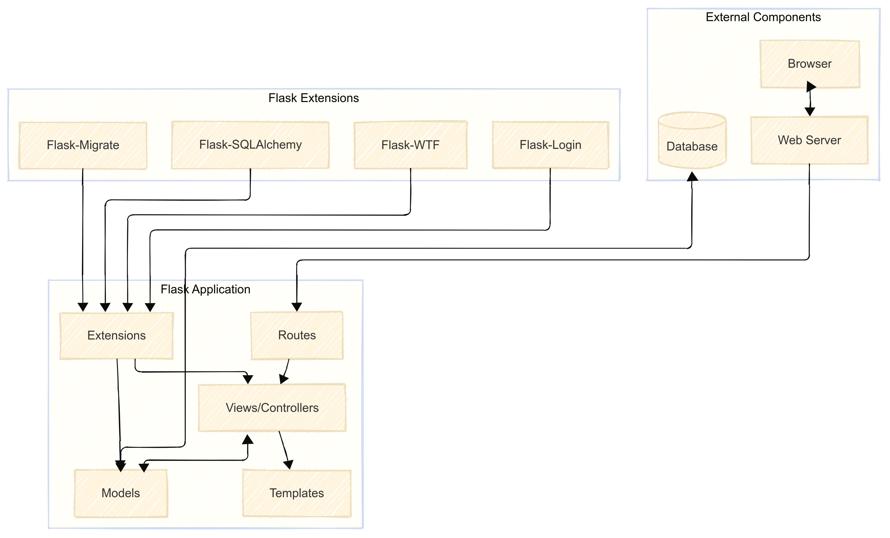
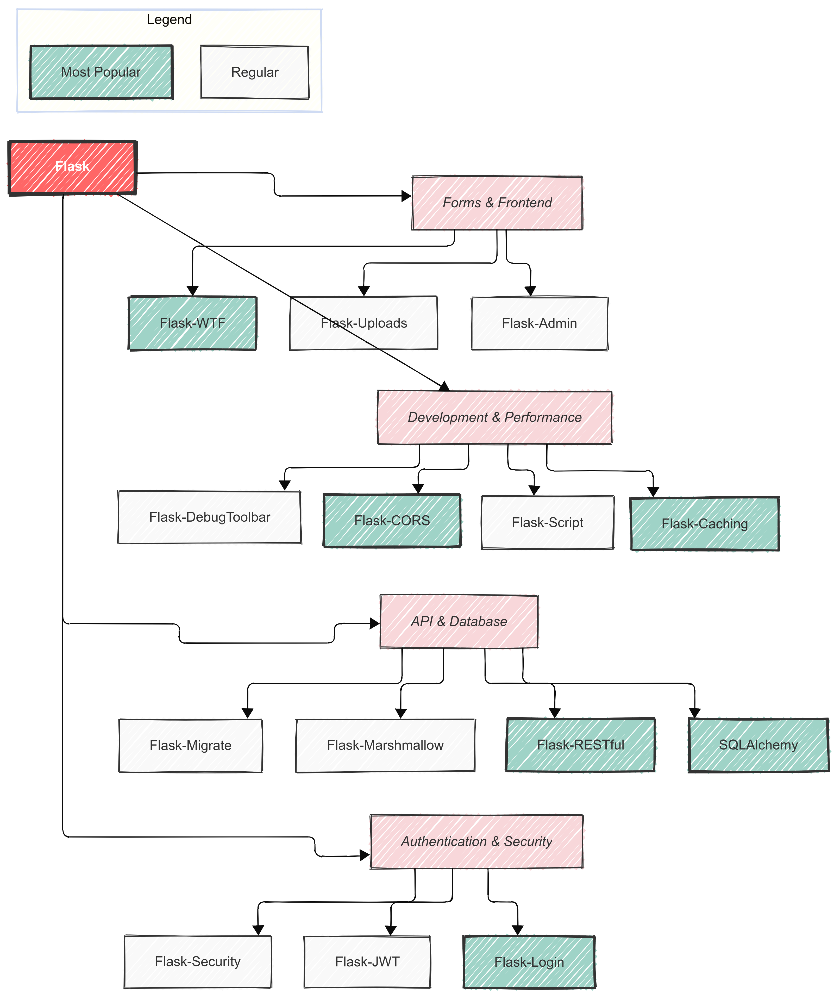
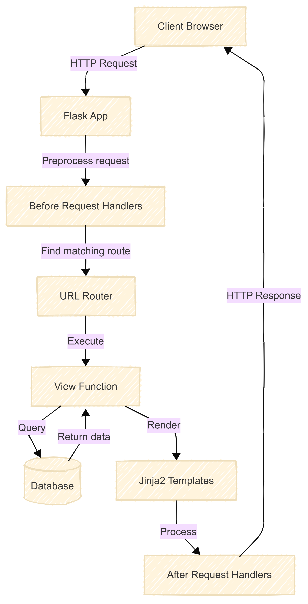
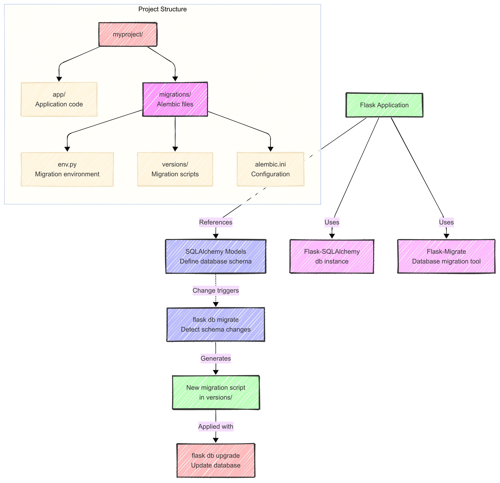
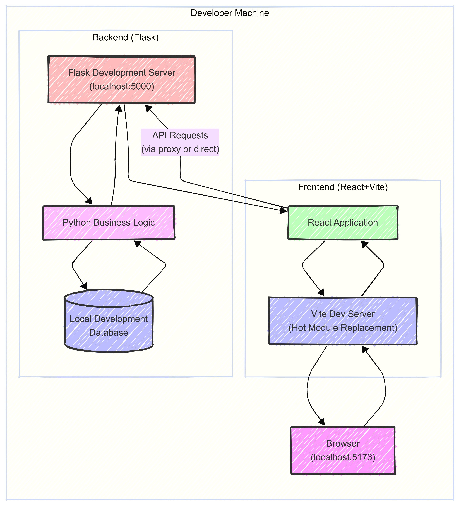
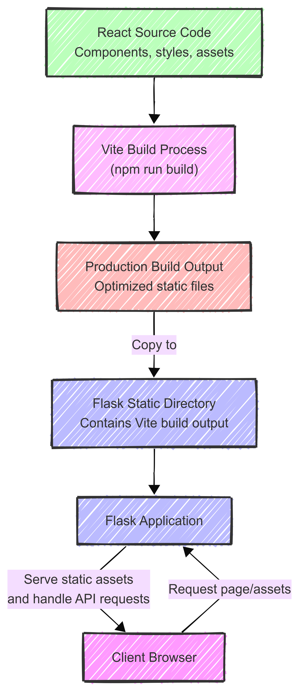

Developing Full Stack Applications 🚀
using Flask + Friends 🐍
- Ajay Nadathur
@ajaykumarns
|
nadathurx.com
## Agenda 📋 - Introduction to Flask Ecosystem 🌟 - Full Stack Development with Flask 🏗️ - Backend - Persistence - Web app - Concurrency in Flask apps 🔄 - Deployment with Docker, Nginx and Gunicorn 🚢 - Key Takeaways 🎯 --- ## Introduction to Flask Ecosystem 🌟 --- ### What is Flask? 🤔 - A micro web framework for Python <!-- .element: class="fragment" --> - Start small, add what you need (like a LEGO set!) <!-- .element: class="fragment" --> - The ecosystem of extensions that enhance your Flask application <!-- .element: class="fragment" --> - Flask-SQLAlchemy for ORM 📚 - Flask-Migrate for database migrations 🔄 - Flask-Login for authentication 🔐 - Flask-WTF for forms 📝 - and much more! ✨ --- ### Flask Application Architecture 🏗️ <p></p> --- ### Batteries included! 🔋 <p></p> --- ### Typical usecases for Flask 🎯 - API Backends 🔌 - Web Applications 🌐 - Data Visualization 📊 - Serverless Functions ☁️ - Chatbots 🤖 --- ## Full stack development --- ### Project structure 📁 ``` my_flask_app/ ├── app/ # Where the magic happens ✨ │ ├── __init__.py # Application factory 🏭 │ ├── api/ # API endpoints 🔌 │ ├── models/ # Database models 📚 │ ├── routes/ # Route definitions 🛣️ │ ├── static/ # Static assets 📦 │ └── templates/ # Jinja2 templates 🎨 ├── frontend/ # React application ⚛️ ├── migrations/ # Database migrations 🔄 ├── Dockerfile # Docker configuration 🐳 ├── config.py # Configuration ⚙️ ├── requirements.txt # Dependencies 📝 └── wsgi.py # WSGI entry point 🚪 ``` --- ## Backend --- ### Routes - Define routes using `@app.route()` decorator - Support for different HTTP methods (GET, POST, PUT, DELETE) - URL parameters and query strings - Route grouping with Blueprints - Error handling with custom error pages --- ### Request lifecycle <p></p> --- ### Example route ```python api = Blueprint('api', __name__, url_prefix='/api') @api.route('/posts', methods=['GET']) def get_posts(): return jsonify([ {'id': 1, 'title': 'Hello Flask'}, {'id': 2, 'title': 'REST APIs'} ]) @api.route('/posts/<int:post_id>', methods=['PUT']) @login_required def update_post(post_id): data = request.get_json() return jsonify({'status': 'updated'}) ``` --- ## Persistence and ORM --- ### ORM - Object-Relational Mapping - Map Python classes to database tables - Automatically handle database connections and transactions - Provide a query interface for database operations --- ### How to avoid writing raw SQL? --- ### Use SQLAlchemy - SQLAlchemy is the most popular ORM for Flask - Provides a query interface for database operations - Supports relationships between models, validations and constraints --- ```python # models.py from app import db class User(db.Model): id = db.Column(db.Integer, primary_key=True) username = db.Column(db.String(64), unique=True, nullable=False) email = db.Column(db.String(120), unique=True, nullable=False) password_hash = db.Column(db.String(128)) posts = db.relationship('Post', backref='author', lazy='dynamic') class Post(db.Model): id = db.Column(db.Integer, primary_key=True) user_id = db.Column(db.Integer, db.ForeignKey('user.id'), nullable=False) title = db.Column(db.String(100), nullable=False) content = db.Column(db.Text, nullable=False) ``` --- Key Features: - Powerful joins and filtering - Aggregations and grouping - Eager loading for performance - Complex subqueries - Bulk operations - Window functions --- ### SQLAlchemy vs Raw SQL 🔄 <div class="fragment fade-up"> <h4>Finding Users and Post Count 📊</h4> <pre style="font-size: 0.4em; width: 100%;"><code class="python" data-trim> # SQLAlchemy (the cool way 😎) result = (db.session.query( User.username, func.count(Post.id).label('posts')) .join(Post) .group_by(User.username) .all()) </code></pre> #### SQL (the old-school way 👴) <pre style="font-size: 0.4em; width: 100%;"><code class="sql" data-trim> SELECT users.username, COUNT(posts.id) as posts FROM users JOIN posts ON users.id = posts.user_id GROUP BY users.username; </code></pre> </div> --- <div class="fragment fade-up"> <h4>Finding Trending Posts 🔥</h4> <pre style="font-size: 0.4em; width: 100%;"><code class="python" data-trim> # SQLAlchemy (making it rain! 💫) trending = (Post.query .filter(Post.created_at >= week_ago) .order_by(Post.views.desc()) .limit(10) .all()) </code></pre> <pre style="font-size: 0.4em; width: 100%;"><code class="sql" data-trim> -- SQL (the classic approach 📜) SELECT * FROM posts WHERE created_at >= DATE_SUB(NOW(), INTERVAL 1 WEEK) ORDER BY views DESC LIMIT 10; </code></pre> </div> --- <div class="fragment fade-up"> <h4>Complex Nested Conditions 🧩</h4> <pre style="font-size: 0.4em; width: 100%;"><code class="python" data-trim> # SQLAlchemy (flexing those Python muscles 💪) posts = (Post.query .join(User) .filter( or_( and_(Post.is_published == True, User.is_verified == True), User.is_admin == True )) .all()) </code></pre> <pre style="font-size: 0.4em; width: 100%;"><code class="sql" data-trim> -- SQL (when you want to feel nostalgic 🎬) SELECT posts.* FROM posts JOIN users ON users.id = posts.user_id WHERE (posts.is_published = TRUE AND users.is_verified = TRUE) OR users.is_admin = TRUE; </code></pre> </div> --- #### Why SQLAlchemy Rocks! 🎸 <div class="fragment fade-up" style="margin-top: 20px;"> <ul style="list-style: none; font-size: 0.8em;"> <li class="fragment fade-up"> <span style="font-size: 1.2em;">🔍</span> Type hints and autocomplete <small style="color: #666;">(no more typos in column names!)</small> </li> <li class="fragment fade-up"> <span style="font-size: 1.2em;">🛡️</span> SQL injection protection <small style="color: #666;">(keeping the bad guys out!)</small> </li> <li class="fragment fade-up"> <span style="font-size: 1.2em;">🧩</span> Reusable query components <small style="color: #666;">(DRY code is happy code!)</small> </li> <li class="fragment fade-up"> <span style="font-size: 1.2em;">🔄</span> Database agnostic <small style="color: #666;">(switch databases like changing clothes!)</small> </li> </ul> </div> --- <h3>How to safely update database schema? 🤔</h3> --- <h3>Use Flask-Migrate and Alembic 🚀</h3> <ul style="list-style: none;"> <li class="fragment fade-up"> <span style="font-size: 1.2em;">📚</span> Version control for database schema <small style="color: #666;">(like git for your database!)</small> </li> <li class="fragment fade-up"> <span style="font-size: 1.2em;">🤝</span> Team collaboration <small style="color: #666;">(no more "works on my machine"!)</small> </li> <li class="fragment fade-up"> <span style="font-size: 1.2em;">🛡️</span> Safe schema updates <small style="color: #666;">(because YOLO is not a database strategy!)</small> </li> <li class="fragment fade-up"> <span style="font-size: 1.2em;">⏮️</span> Rollback capability <small style="color: #666;">(oops button included!)</small> </li> <li class="fragment fade-up"> <span style="font-size: 1.2em;">📁</span> Migrations stored in <code>migrations</code> directory </li> <li class="fragment fade-up"> <span style="font-size: 1.2em;">🔄</span> Use <code>flask db migrate/upgrade/downgrade</code> </li> </ul> --- <p></p> --- <h3>Database Migration Examples 💡</h3> <pre style="width: 100%;"><code class="bash" data-trim> # After model changes $ flask db migrate -m "Add user table" # Let Alembic do the detective work 🔍 # Review generated migration (always double-check! 👀) $ code migrations/versions/123abc_add_user_table.py # Apply migration (fingers crossed! 🤞) $ flask db upgrade # Rollback if needed (your safety net! 🪂) $ flask db downgrade </code></pre> --- <h3>Best Practices 📝</h3> <ul style="list-style: none;"> <li class="fragment fade-up"> <span style="font-size: 1.2em;">🔍</span> Always review generated migrations <small style="color: #666;">(trust but verify!)</small> </li> <li class="fragment fade-up"> <span style="font-size: 1.2em;">🧪</span> Test migrations on sample data <small style="color: #666;">(test in staging, not in prod!)</small> </li> <li class="fragment fade-up"> <span style="font-size: 1.2em;">👀</span> Include migrations in code review <small style="color: #666;">(four eyes are better than two!)</small> </li> <li class="fragment fade-up"> <span style="font-size: 1.2em;">📸</span> Maintain migration history <small style="color: #666;">(like a family photo album for your schema!)</small> </li> </ul> --- ## Web app 🌐 --- ### 1. Separate Frontend (Recommended) ⚛️ <ul style="list-style: none;"> <li class="fragment fade-up"> <span style="font-size: 1.2em;">🔄</span> Independent development workflow <small style="color: #666;">(freedom to innovate!)</small> </li> <li class="fragment fade-up"> <span style="font-size: 1.2em;">🛠️</span> Modern tooling with Vite/Webpack <small style="color: #666;">(blazing fast builds!)</small> </li> <li class="fragment fade-up"> <span style="font-size: 1.2em;">🎮</span> Better developer experience <small style="color: #666;">(happy devs = better code!)</small> </li> <li class="fragment fade-up"> <span style="font-size: 1.2em;">🎯</span> Clear separation of concerns <small style="color: #666;">(keeping it clean and organized!)</small> </li> </ul> --- #### Development Workflow - vite dev server 🚀 <div class="r-stack"> <div style="display: grid; grid-template-columns: 1fr 1fr; gap: 20px; align-items: center;"> <div> <p></p> </div> <div style="text-align: left; font-size: 0.8em;"> <ul> <li class="fragment">Two servers running in parallel (like a power couple! 💑) <ul> <li>Flask server for API endpoints 🐍</li> <li>vite dev server for frontend development ⚡</li> </ul> </li> <li class="fragment">vite dev server helps with hot-reloading (magic! ✨)</li> <li class="fragment">All API calls are proxied to Flask server (sneaky! 🕵️♂️)</li> </ul> </div> </div> </div> --- #### Production Workflow 🚀 <div class="r-stack"> <div style="display: grid; grid-template-columns: 1fr 1fr; gap: 20px; align-items: center;"> <div> <p></p> </div> <div style="text-align: left; font-size: 0.8em;"> <ul> <li class="fragment">Single server setup (keeping it simple! 😌)</li> <li class="fragment">Flask serves both API and static assets (like a boss! 💪)</li> <li class="fragment">React app is pre-built and optimized (zoom zoom! 🏎️)</li> <li class="fragment">No development overhead in production (lean and mean! 💪)</li> </ul> </div> </div> </div> --- ### 2. Flask Serving Frontend 🐍 <ul style="list-style: none;"> <li class="fragment fade-up"> <span style="font-size: 1.2em;">🎨</span> Traditional server-side rendering with jinja2 <small style="color: #666;">(old school but reliable!)</small> </li> <li class="fragment fade-up"> <span style="font-size: 1.2em;">📦</span> No frontend build process needed <small style="color: #666;">(simplicity has its charm!)</small> </li> <li class="fragment fade-up"> <span style="font-size: 1.2em;">🎯</span> Plain HTML, CSS and JavaScript <small style="color: #666;">(back to basics!)</small> </li> </ul> <div class="fragment fade-up" style="margin-top: 30px;"> <h4 style="color: #ff6b6b;">Drawbacks 😅</h4> <ul style="list-style: none;"> <li class="fragment fade-up"> <span style="font-size: 1.2em;">🦕</span> No hot-reloading or modern tooling <small style="color: #666;">(welcome to the stone age!)</small> </li> <li class="fragment fade-up"> <span style="font-size: 1.2em;">😫</span> Harder to deploy and maintain <small style="color: #666;">(more manual work needed)</small> </li> <li class="fragment fade-up"> <span style="font-size: 1.2em;">🤷♂️</span> Modern templates expect vite/webpack <small style="color: #666;">(swimming against the tide!)</small> </li> </ul> </div> --- #### Example of a simple jinja2 template <pre style="font-size: 0.4em; width: 100%;"><code class="html" data-trim> <html> <head> <title>{% block title %}{% endblock %}</title> <link rel="stylesheet" href="{{ url_for('static', filename='css/style.css') }}"> </head> <body> <header> <h1>My Flask App</h1> <nav> <a href="{{ url_for('main.index') }}">Home</a> <a href="{{ url_for('main.about') }}">About</a> </nav> </header> <main> {% block content %}{% endblock %} </main> <footer> © 2025 My Flask App </footer> <script src="{{ url_for('static', filename='js/main.js') }}"></script> </body> </html> </code></pre> --- ## Concurrency 🔄 --- ### Python's Async Features 🎭 - Introduced in Python 3.5 with async/await syntax (finally! 🎉) <!-- .element: class="fragment" --> - Coroutines: Functions that can pause and resume execution (like a yoga master! 🧘♂️) <!-- .element: class="fragment" --> - Event Loop: Manages multiple coroutines concurrently (like a juggler! 🤹♂️) <!-- .element: class="fragment" --> - Great for I/O-bound tasks (network, file operations) 🚀 <!-- .element: class="fragment" --> - Not helpful for CPU-bound tasks (use multiprocessing) 🤖 <!-- .element: class="fragment" --> --- ### Async Magic in Python ✨ <div class="fragment fade-up"> <h4>A Simple Async Example 🎭</h4> <pre style="font-size: 0.4em; width: 100%;"><code class="python" data-trim> # Let's fetch some data asynchronously! 🚀 async def fetch_data(): print("Starting the journey... 🏃♂️") await asyncio.sleep(2) # Pretending to do some heavy lifting 🏋️♂️ print("Mission accomplished! 🎯") return {"data": "here"} async def main(): # Launch 3 tasks at once (like a juggler! 🤹♂️) tasks = [fetch_data() for _ in range(3)] results = await asyncio.gather(*tasks) print("All done! 🎉") # Takes ~2s instead of 6s (Speed demon! 🏎️) asyncio.run(main())</code></pre> </div> --- ### What's happening here? 🤔 <div class="fragment fade-up" style="margin-top: 20px;"> <ul style="list-style: none; font-size: 0.8em;"> <li class="fragment fade-up"> <span style="font-size: 1.2em;">⏸️</span> Tasks can pause and resume <small style="color: #666;">(like hitting the pause button!)</small> </li> <li class="fragment fade-up"> <span style="font-size: 1.2em;">🔄</span> Event loop manages everything <small style="color: #666;">(the conductor of our async orchestra!)</small> </li> <li class="fragment fade-up"> <span style="font-size: 1.2em;">⚡</span> Non-blocking operations <small style="color: #666;">(no more waiting around!)</small> </li> <li class="fragment fade-up"> <span style="font-size: 1.2em;">🎯</span> Perfect for I/O operations <small style="color: #666;">(like fetching cat pictures from the internet!)</small> </li> </ul> </div> --- ### When to Use Async? 🎯 <div class="fragment fade-up"> <div style="display: grid; grid-template-columns: 1fr 1fr; gap: 20px;"> <div> <h4>Great Use Cases 🌟</h4> <ul style="list-style: none; font-size: 0.8em;"> <li class="fragment fade-up"> <span style="font-size: 1.2em;">🌐</span> Web requests <small style="color: #666;">(API calls galore!)</small> </li> <li class="fragment fade-up"> <span style="font-size: 1.2em;">💾</span> Database operations <small style="color: #666;">(async all the things!)</small> </li> <li class="fragment fade-up"> <span style="font-size: 1.2em;">📁</span> File operations <small style="color: #666;">(read/write like a ninja!)</small> </li> </ul> </div> <div> <h4>Not So Great 🚫</h4> <ul style="list-style: none; font-size: 0.8em;"> <li class="fragment fade-up"> <span style="font-size: 1.2em;">🧮</span> Heavy calculations <small style="color: #666;">(CPU goes brrrr!)</small> </li> <li class="fragment fade-up"> <span style="font-size: 1.2em;">🔄</span> Image processing <small style="color: #666;">(use multiprocessing instead!)</small> </li> <li class="fragment fade-up"> <span style="font-size: 1.2em;">🧬</span> Machine learning <small style="color: #666;">(async won't help here!)</small> </li> </ul> </div> </div> </div> --- ## Deploying Flask Applications --- ### The Deployment Stack - Nginx: Reverse proxy, static files, SSL termination <!-- .element: class="fragment" --> - Gunicorn: Production-grade WSGI server <!-- .element: class="fragment" --> - Docker: Containerization and environment consistency <!-- .element: class="fragment" --> --- ### Best Practices for Production - Use environment variables for configuration <!-- .element: class="fragment" --> - Separate development and production settings <!-- .element: class="fragment" --> - Handle static files with Nginx, not Flask <!-- .element: class="fragment" --> - Configure proper logging and monitoring <!-- .element: class="fragment" --> - Set up health checks <!-- .element: class="fragment" --> --- ### Dockerfile Tips ```dockerfile FROM python:3.11-slim # Keep layers minimal and clean RUN apt-get update && apt-get install -y \ build-essential python3-dev \ && rm -rf /var/lib/apt/lists/* # Use multi-stage builds for frontend COPY requirements.txt . RUN pip install --no-cache-dir -r requirements.txt # Add healthcheck HEALTHCHECK CMD curl --fail http://localhost:8080/health ``` --- ### Gunicorn Configuration - Worker Types: sync, gevent, eventlet (choose your poison) <!-- .element: class="fragment" --> - Worker Count: (2 x CPU cores) + 1 <!-- .element: class="fragment" --> - Timeouts: Request timeout, graceful shutdown <!-- .element: class="fragment" --> - Logging: Error logs, access logs <!-- .element: class="fragment" --> ```python # gunicorn-conf.py import multiprocessing workers = multiprocessing.cpu_count() * 2 + 1 loglevel = "info" capture_output = True ``` --- ### Nginx as Reverse Proxy - Handles SSL/TLS termination <!-- .element: class="fragment" --> - Serves static files efficiently <!-- .element: class="fragment" --> - Load balancing between workers <!-- .element: class="fragment" --> - Buffers slow clients <!-- .element: class="fragment" --> --- ### Deployment Checklist 1. Domain & SSL Setup <!-- .element: class="fragment" --> 2. Environment Configuration <!-- .element: class="fragment" --> 3. Monitoring & Logging <!-- .element: class="fragment" --> 4. Database Management <!-- .element: class="fragment" --> --- #### 1. Domain & SSL Setup <ul> <li class="fragment">Purchase cheap domain names at <a href="https://www.spaceship.com/">spaceship.com</a> or <a href="https://hostinger.in/">hostinger.in</a></li> <li class="fragment">Use chatgpt to brainstorm domain names and ideas</li> <li class="fragment">Helpful tip: Use <a href="https://www.cloudflare.com/">cloudflare.com</a> as your reverse proxy</li> <ul> <li class="fragment">Free SSL certificates</li> <li class="fragment">DDoS protection</li> <li class="fragment">CDN for static assets</li> <li class="fragment">and more...</li> </ul> </ul> --- #### 2. Hosting Options for Flask Apps <ul> <li class="fragment">Top providers: <ul> <li>Hostinger (My recommendation, budget friendly and good support)</li> <li>DigitalOcean</li> <li>Linode/Akamai</li> <li>Hetzner</li> </ul> </li> <li class="fragment">Pro tip: Start with basic VPS, upgrade when needed</li> </ul> --- #### 3. Environment Configuration <ul> <li class="fragment">Use Docker's <code>.env</code> file for development</li> <li class="fragment">If you are nervous about handling secrets, use a secret manager</li> <li class="fragment">Secret managers for production: <ul> <li><a href="https://www.vaultproject.io/">Hashicorp Vault</a></li> <li>AWS Secrets Manager</li> <li>Docker Swarm Secrets</li> </ul> </li> </ul> --- #### 4. Monitoring & Logging <ul> <li class="fragment">Start with a simple logging setup, periodically check logs for errors or issues</li> <li class="fragment">For error tracking, start with <a href="https://sentry.io/">Sentry.io</a>. It's free and easy to configure flask/python projects</li> <li class="fragment">Health checks and metrics - create a simple health check endpoint in your flask app.</li> <li class="fragment">Can use more sophisticated tools like Prometheus, Grafana, etc later on.</li> </ul> --- #### 5. Database Management <ul> <li class="fragment">Choose a database that you are comfortable with. My recommendation, don't overcomplicate: <a href="https://dev.to/shayy/postgres-is-all-you-need-3pgb">All you need is postgres</a></li> <li class="fragment">Regular backups to cloud storage <ul> <li class="fragment">Automated with cron jobs</li> <li class="fragment">Test restore procedures</li> </ul> </li> <li class="fragment">Use connection pooling to manage database connections efficiently.</li> <li class="fragment">Migration strategy - Use Flask-Migrate for database migrations.</li> </ul> --- ## Key Takeaways 🎯 <ul> <li class="fragment">Flask = Simple, flexible, productive (like a Swiss Army knife! 🔧)</li> <li class="fragment">Sync is fine, scale horizontally (go wide! 🌈)</li> <li class="fragment">Flask + Gunicorn + Nginx = Production ready (dream team! 🏆)</li> <li class="fragment">Start with VPS + Cloudflare (keep it simple! 😌)</li> <li class="fragment">Postgres + Sentry = Peace of mind (sleep well! 😴)</li> </ul> --- ## Resources - Official Flask Documentation: https://flask.palletsprojects.com/ - Flask Mega-Tutorial by Miguel Grinberg - Full Stack Python: https://www.fullstackpython.com/flask.html - Docker Documentation: https://docs.docker.com/ - React Documentation: https://react.dev/ --- ## Questions? 🤔 Thank you for attending! 🙏 --- ## Misc Slides --- ## Common Pitfalls & Solutions ### CORS in Development ```python # Flask backend from flask_cors import CORS app = Flask(__name__) CORS(app, resources={r"/api/*": {"origins": "http://localhost:3000"}}) ``` ```js // Vite/Webpack frontend export default { server: { proxy: { '/api': 'http://localhost:5000' } } } ``` --- ### SQLAlchemy vs Raw SQL <pre style="font-size: 0.4em; width: 100%;"><code class="python" data-trim> # Find users and their post count # SQLAlchemy result = (db.session.query( User.username, func.count(Post.id).label('posts')) .join(Post) .group_by(User.username) .all()) # SQL equivalent """ SELECT users.username, COUNT(posts.id) as posts FROM users JOIN posts ON users.id = posts.user_id GROUP BY users.username; """ </pre> --- <pre style="font-size: 0.4em; width: 100%;"><code class="python" data-trim> # Find trending posts (most views this week) # SQLAlchemy trending = (Post.query .filter(Post.created_at >= week_ago) .order_by(Post.views.desc()) .limit(10) .all()) # SQL equivalent """ SELECT * FROM posts WHERE created_at >= DATE_SUB(NOW(), INTERVAL 1 WEEK) ORDER BY views DESC LIMIT 10; """ </pre> --- <pre style="font-size: 0.4em; width: 100%;"><code class="python" data-trim> # Complex nested conditions # SQLAlchemy posts = (Post.query .join(User) .filter( or_( and_(Post.is_published == True, User.is_verified == True), User.is_admin == True )) .all()) # SQL equivalent """ SELECT posts.* FROM posts JOIN users ON users.id = posts.user_id WHERE (posts.is_published = TRUE AND users.is_verified = TRUE) OR users.is_admin = TRUE; """ </pre>